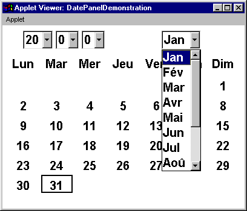

L10n and I18n of the DatePanel
The I18n resources used by the DatePanel
are the names which appear on the Month
Choice component and the Labels
for the names of the days. For example the appearance of the
DatePanel
when configured for a French language linguistic environment might
be as follows.

These resources were hard coded into the initial version of the
DatePanel, the month names
in the DatePanel.java
file and the day names in the MonthPanel.java
file. For example the month names were hard coded as follows.
private static String monthNames[] = { "Jan", "Feb", "Mar", "Apr",
"May", "Jne", "Jly", "Aug",
"Sep", "Oct", "Nov", "Dec" };
monthChoice = new Choice();
monthChoice.addItemListener( this);
for ( thisOne = 0; thisOne < 12; thisOne++){
monthChoice.addItem( monthNames[ thisOne]);
} // End for.
These resources will have to be moved into a default ResourceBundle,
called DatePanelResources.